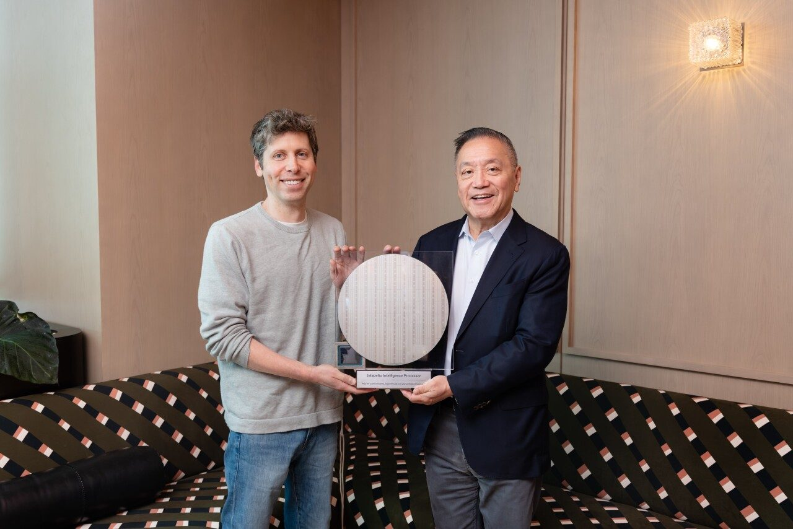
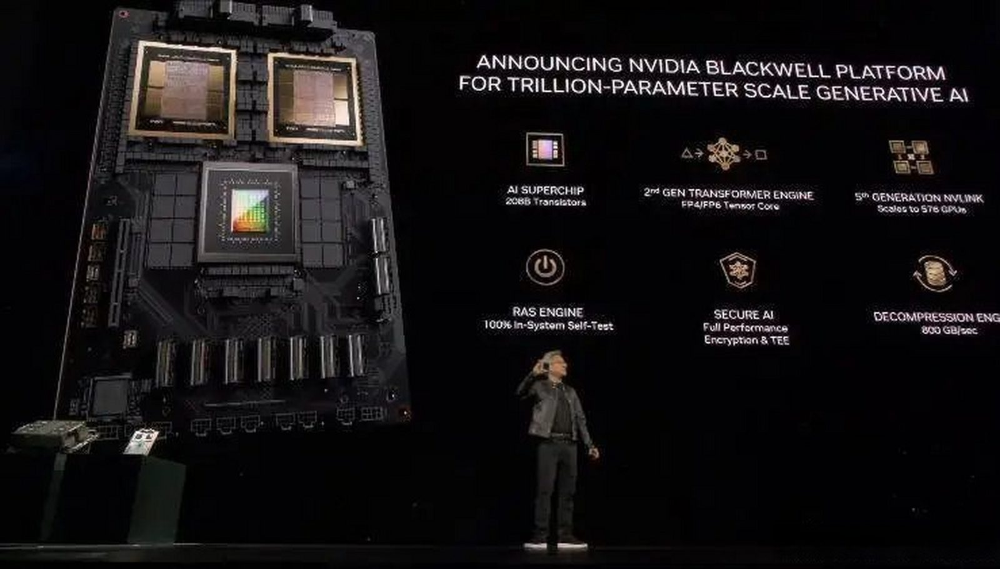

OpenAI下场造芯片，巨头们为何纷纷逃离英伟达
奥特曼从博通CEO手里接过芯片样片，上面印着芯片代号："墨西哥辣椒"（Jalapeño）。
这颗芯片从设计到送交台积电制造，仅仅用了9个月，而以前行业周期是18个月以上。
不只是OpenAI，谷歌、亚马逊、Anthropic、微软、Meta、XAI，都在下场造芯片。
AI大厂们，仿佛不造颗芯片，出门都不好意思跟人打招呼。
明明英伟达芯片算力一骑绝尘，AI大厂们为何要下血本逃离英伟达呢？
答案是一道简单的算术题。

一、推理，悬在头上的利剑
"墨西哥辣椒"是一颗纯推理芯片。
所谓推理，就是AI回答你问题时的计算过程。
推理耗时不理想，用户可就跑了。
训练AI时GPU慢可以等，给用户推理时可不行。
AI公司们已经看清了，推理，已成为悬在他们头上的利剑。
训练是一次性的学费，推理却是随用户量永久增长的日常开销，用户越多，烧得越快。
据英国《金融时报》报道，2025全年，OpenAI收入130亿美元，总支出却高达340亿。
奥特曼在谈到芯片合作计划时说：「这些合作将使OpenAI的算力规模接近3000万千瓦。但用户需求会很快把它填满。」
3000万千瓦是什么概念？大约相当于30座大型核电机组的功率。
二、英伟达怎么成为了堵点
一颗芯片的利润去哪了，我拿英伟达B200举例。据分析机构估算，物料成本约6400美元。
卖给AI厂商多少钱？4万到5万美元。
光按物料成本算，利润率就超过80%，老黄含泪赚3万。
而台积电拿到的代工费，只是零头，约1千美元。
一颗芯片，英伟达的利润是台积电代工费的三十多倍。

英伟达能收这个税，不只是因为芯片造得好。
更因为20年积累的AI计算软件生态（CUDA）让客户离不开。
数百万开发者、数千个优化工具库、一个几乎覆盖所有AI应用场景的工具链。
换了芯片，这些可都得重来。
但反过来说，如果可以绕过英伟达或者台积电。
你是OpenAI，你会先绕过赚走80%的那个，还是零头的那个？
这道算数题，所有AI厂商都得出了一致的答案。
三、AI飞轮：门槛正在崩塌
除了利润，给AI厂商们勇气，挑战英伟达几十年护城河的原因，在于AI加速。
OpenAI芯片9个月流片的秘密是什么？
OpenAI自己承认，他们用自己的模型参与了芯片设计。
OpenAI总裁布罗克曼说，「我们的模型能够加速这件事的程度，令我们自己都非常惊讶。」
这意味着定制芯片的门槛正在快速降低。
以后每家AI公司都可能在几个月内造出自己的专属芯片。
而且这是一个加速过程，更好AI模型，产出更好的芯片设计，再反哺到公司的业务上。
这就是AI飞轮：AI设计芯片，芯片跑AI，推理更便宜，AI更强，这个循环一旦转起来，就会越转越快。
AI真的已经开始左脚踩右脚飞升了。
四、绕不开的台积电
但现实世界，依然是复杂的。
按照马斯克的说法，就是移动电子和移动原子，对AI难度不同。
所以绕过了芯片设计，AI厂商们最终会遇上制造瓶颈。
台积电代工市场份额超过70%，三星不到7%，差距10倍以上。
先进制程产能，已经售罄至2027年。
先进封装技术（把芯片和高速内存封装在一起），更是台积电独家。
你设计了自己的芯片，还得回来找台积电封装。
第一代自研芯片，大家几乎都交给了台积电。
现在风向变了：Anthropic的首款芯片传出找三星做2纳米，Meta的下一代芯片也传出转投三星。
不是三星突然变强了，是台积电的队，实在排不上了。
写在最后
推理需求的极速攀升，逼得AI厂商亲自到供应链上，自己打通堵点。
哪怕堵点是强如英伟达这样的公司。
这与其说这是对英伟达80%利润的不满。
不如说是AI厂商们，对未来算力黑洞的押注。
算力、数据、电力，AI正在加速吞噬它们。
AI厂商害怕的是，喂不饱这个黑洞的公司，在未来就没有一席之地了。
你觉得英伟达这笔税还能收几年？评论区聊聊。